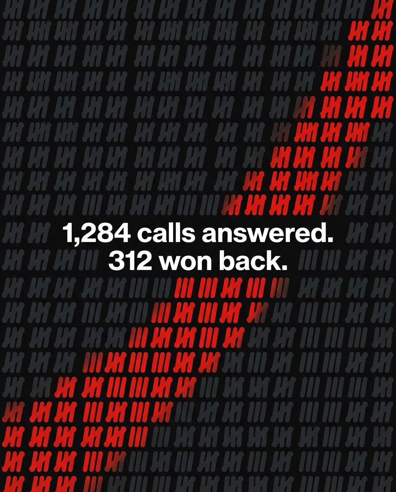
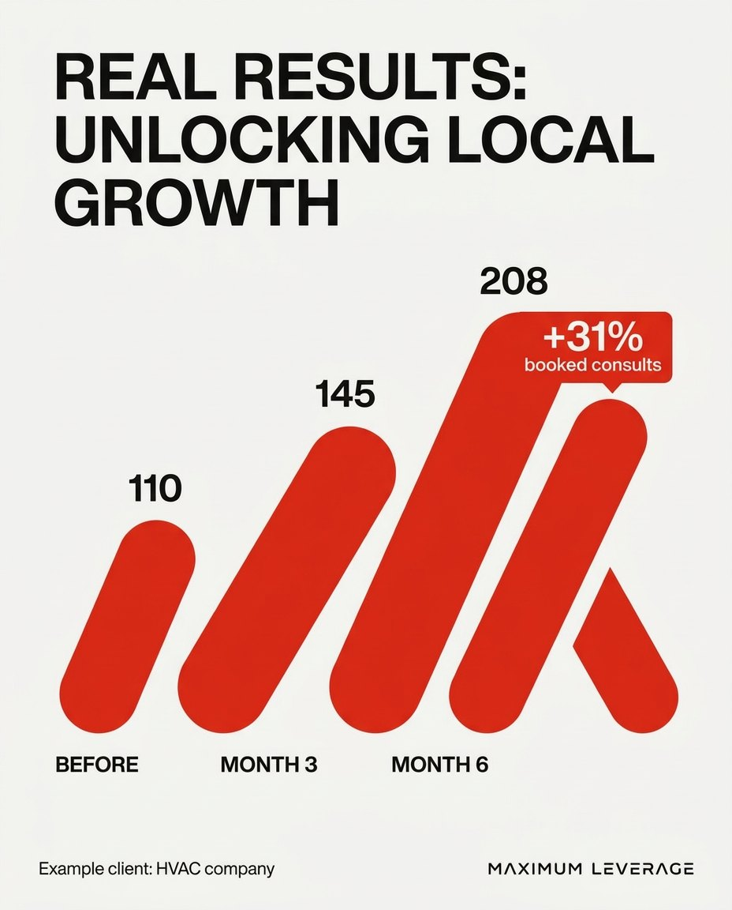
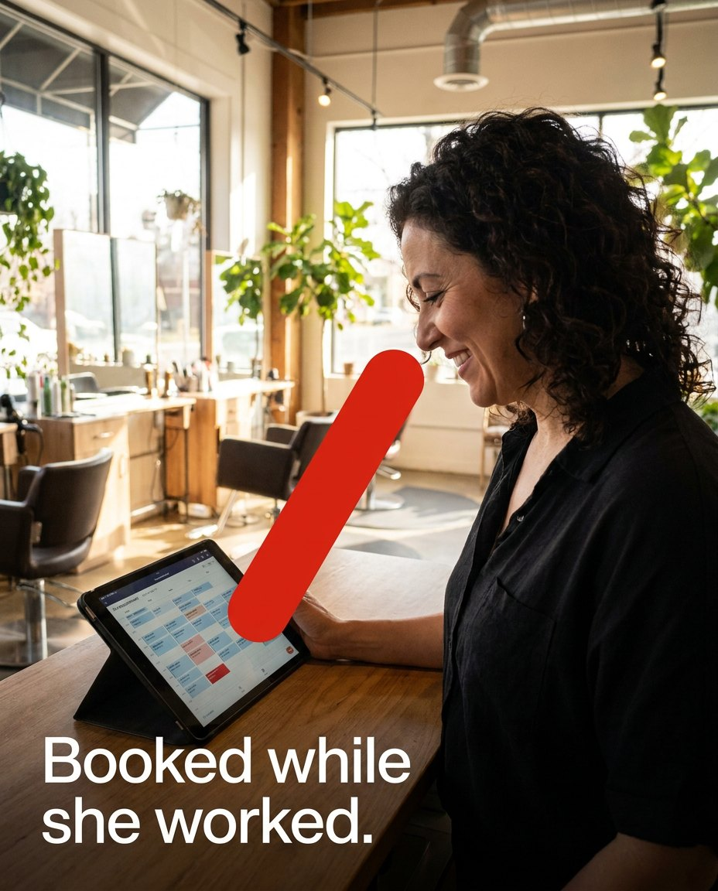
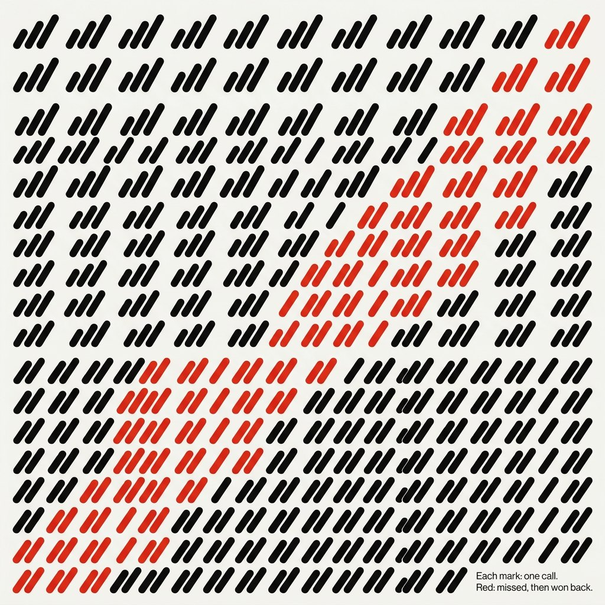
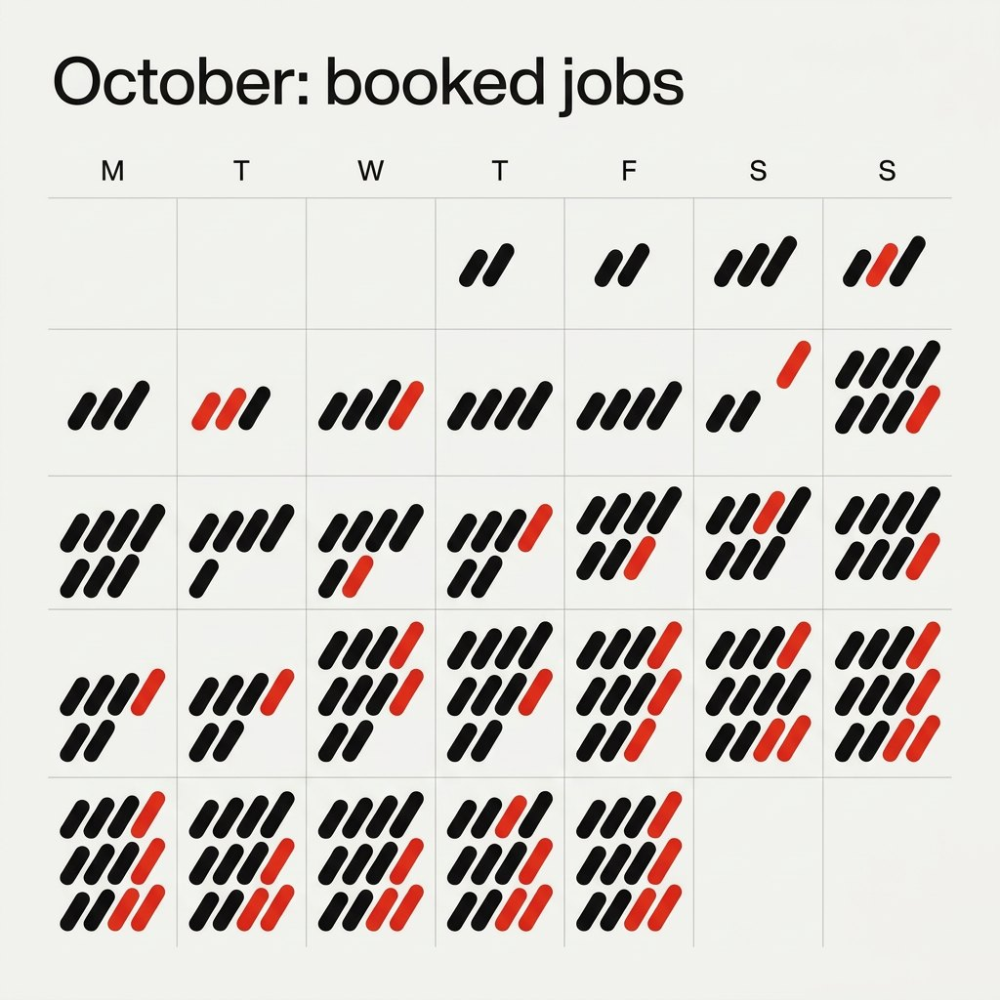
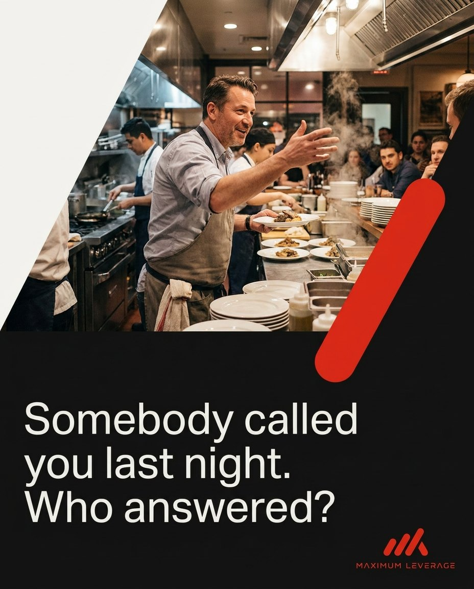
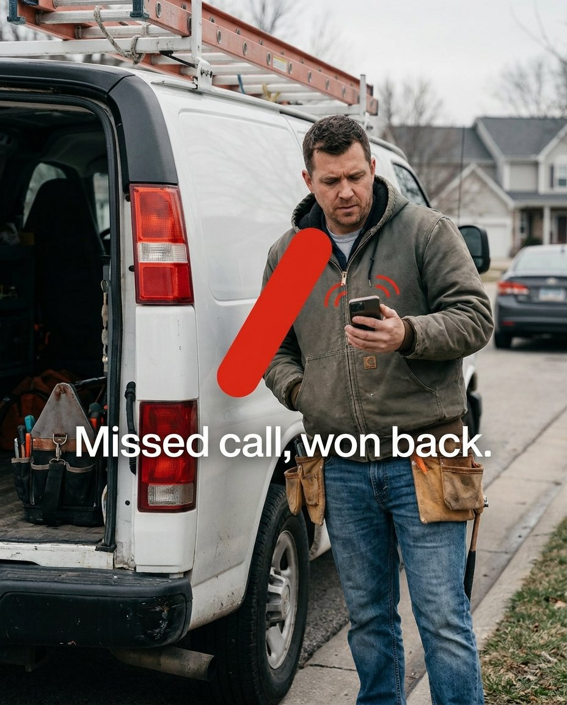
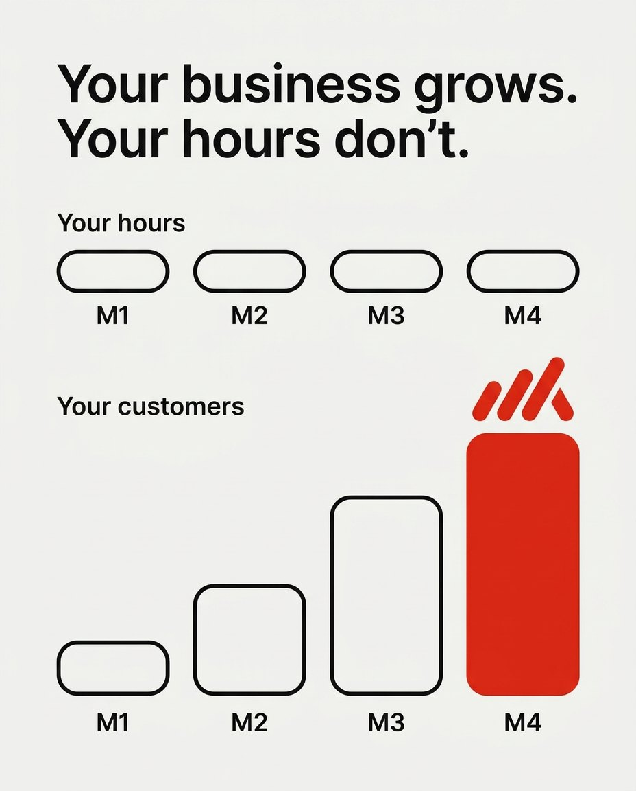
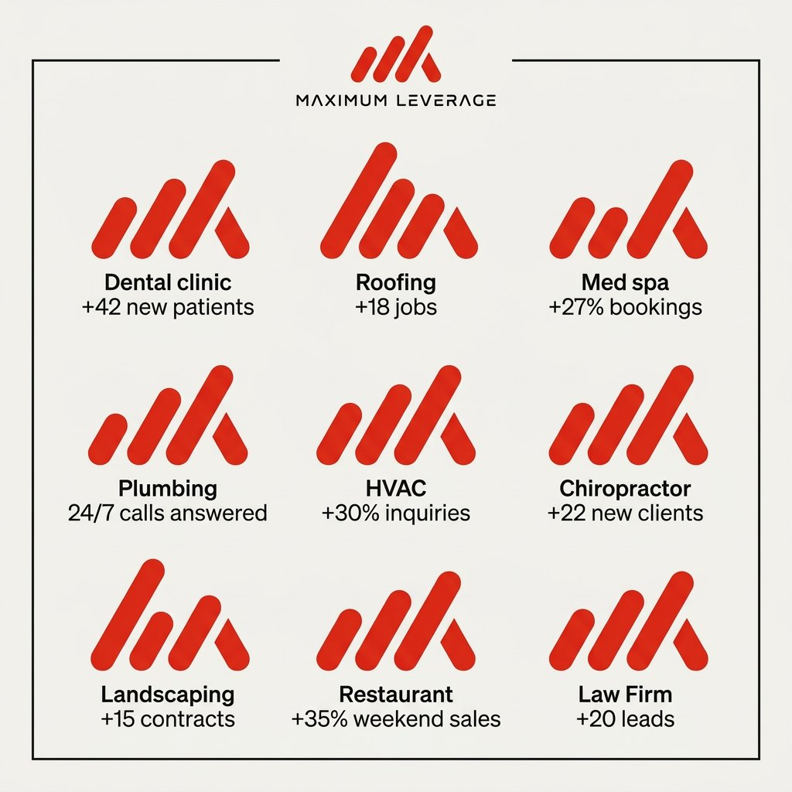

Directions 1, 2 and 4 from the research brief: Proof Bars (the mark as a real results chart), Lever Marker (one Signal stroke over real owners at work) and Tally Field (every stroke is a call, booking or review). Drawn by Nano Banana Pro from the final logo.

The strongest pattern. It's a wall of tally marks drawn with the mark's own strokes. The red run climbing at the lever's angle is the story: 312 calls won back. It holds type, works on Carbon, and every mark stands for something real.

The mark turned back into the chart it came from: before, month 3, month 6, with the lever carrying the +31% callout. It's the clearest way to show a result, and it becomes a template for every case study.

One Signal stroke over a real owner at work, with a short line of copy. It's the most restrained option, and the lever acts as a stamp of proof rather than decoration. This is the photo system.

Same idea as I09 on Chalk, with red marking missed calls that were won back. It's good as a data texture, but it reads busier and the red shape is more random. I would fold it into I09 as the light colourway.

A clever month view where each day fills with tally strokes. It works well as a report or social graphic, but it's more of an infographic than a pattern.

A 60° cut between photo and Carbon, with the lever on the edge. It's a strong post template, and the angle comes from the mark. It's a good second layout for the I05 photo system.

Right idea, but the stroke covers the subject and the caption sits on a busy background. I05 does the same job better.

The line “Your business grows. Your hours don’t.” is great, but the bars lose the 60° lean, so it stops being ours. I'd keep the copy and redo it in the I01 style.

Just the logo repeated nine times with captions. It says nothing the individual cards don't, so I'm cutting it.